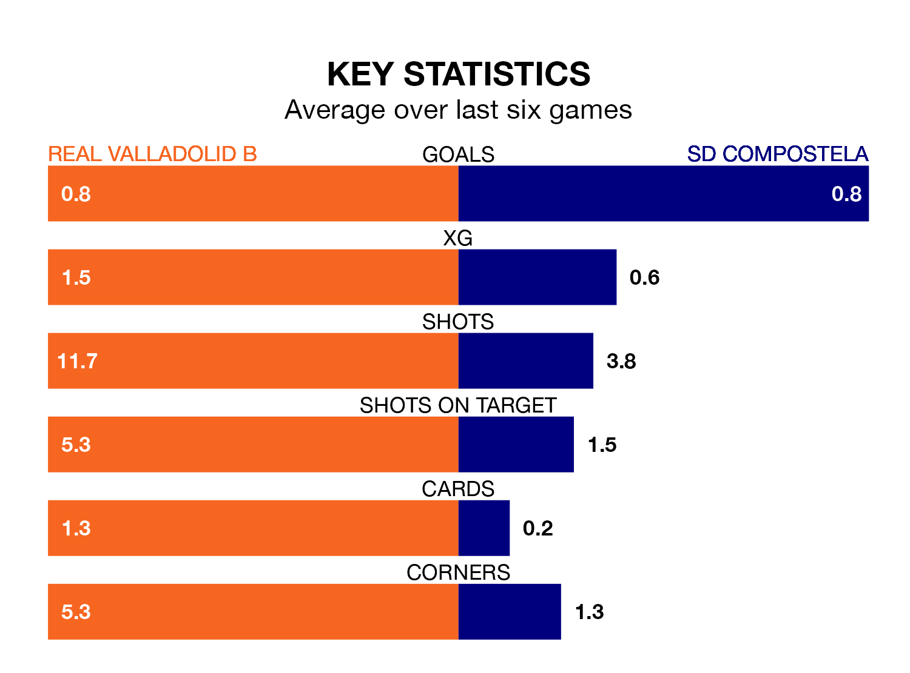

Real Valladolid B face SD Compostela at Campo 1 Anexos del José Zorrilla on Sunday looking to secure a first win in six Segunda División RFEF Group 1 games.
Valladolid B have lost one and drawn four matches since they last earned three points – against Real Oviedo B on January 27.
They face a Compostela side who have won one and drawn two over that time.
In the last 10 years, Valladolid B and Compostela have played each other on seven occasions. Valladolid B won two of them, Compostela four, and they drew once.
On average, Valladolid B scored 1.3 goals and Compostela 1.9 in those matches.
Their last meeting was on October 29, when Compostela won 4-1 at home.
With 27 goals in 25 games so far this season, Compostela are scoring at the league's average rate with 1.1 goals per game. And they are conceding fewer than average, letting in 25 goals at a rate of 1.0 per game.
Valladolid B are also average scorers, with 1.1 goals per game. They have conceded 1.6 goals per game.
The away side are sixth in the table after 25 games, of which they have won 10 and drawn six, earning 36 points.
The hosts are five places behind Compostela in 11th, with eight wins and six draws putting them on 30 points.
Valladolid B's last match was on March 3, a 1-1 draw against Covadonga.
Compostela drew 1-1 with Gimnástica Torrelavega last time out, also on Sunday, with Juan Manuel Parapar Calleja on the scoresheet.
Updated: 09:34 (UTC), 08/03/24